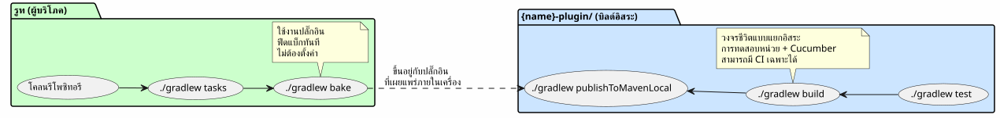
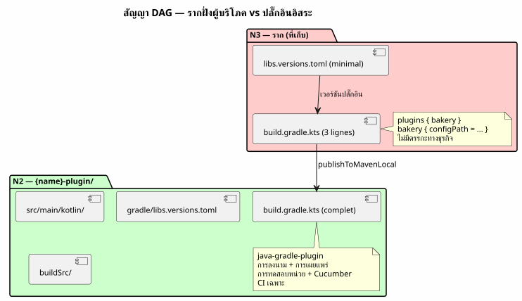

สถาปัตยกรรม « Plugin อิสระ + Root ฝั่งผู้บริโภค » : ทำไม Gradle Builds ของฉันจึงซ้ำซ้อน
เผยแพร่เมื่อ 14 May 2026
- ปัญหา: สถาปัตยกรรมสามแบบที่ทำให้ฉันเสียเวลา
- โซลูชัน: สองบิลด์อิสระ หนึ่งรากผู้บริโภค
- ทำไมสถาปัตยกรรมนี้จึงชนะใจฉัน
- โครงสร้างของโฟลเดอร์ย่อย `{name}-plugin/
- สิ่งที่เราไม่ทำ
- การเปรียบเทียบ: สถาปัตยกรรมทั้งสามเมื่อต้องรับมือกับ Dogfooding
- สัญญา DAG: บิลด์รากจะไม่นำเข้าจากโฟลเดอร์ย่อยเลย
- บทสรุป: การทำซ้ำที่ดูเหมือนจะช่วยประหยัดเวลา
- เอกสารอ้างอิง
คุณโคลนรีโพซิทอรีปลั๊กอิน Gradle คุณเปิดเทอร์มินัล คุณพิมพ์อะไร แล้วต่อไปล่ะ ?./gradlew tasks, แน่นอน แต่ในโฟลเดอร์ไหน? โฟลเดอร์ราก? ซับโมดูล? ต้องอ่าน README ก่อนเพื่อรู้วิธี build หรือไม่? หากคุณลังเลแม้เพียง เพียงวินาทีเดียว สถาปัตยกรรมของโปรเจกต์ก็พังทลาย
นี่คือวิธีที่ฉันแก้ปัญหานี้ได้อย่างเด็ดขาด — และทำไมสิ่งนี้ pattern คือเอกลักษณ์ของปลั๊กอิน Gradle ทั้งหมดของฉันในปัจจุบันใน`foundry/public/`.
ปัญหา: สถาปัตยกรรมสามแบบที่ทำให้ฉันเสียเวลา
ก่อนที่จะลงตัวกับแพตเทิร์นปัจจุบัน ฉันลองผิดลองถูกระหว่างสามแนวทาง วิธีคลาสสิกในการจัดระเบียบปลั๊กอิน Gradle แต่ละวิธีมีข้อบกพร่องร้ายแรงจนไม่อาจยอมรับได้
ตัวเลือก 1: ปลั๊กอินแบบแยกเดี่ยว (ไม่มีการ dogfooding)
โปรเจกต์มีเพียงปลั๊กอินเท่านั้น ไม่มีตัวอย่างการใช้งาน ไม่มี โปรเจกต์ที่ใช้งานมัน เพื่อทดสอบมัน จำเป็นต้องสร้างโปรเจกต์ภายนอก ไปที่ อ้างอิงปลั๊กอินผ่าน`mavenLocal`หรือบิลด์แบบคอมโพสิต และเพียงเท่านั้น ตรงนั้นตรวจสอบว่ามันทำงานได้
$ git clone mon-plugin
$ cd mon-plugin
$ ./gradlew build # le plugin compile
$ # ... et maintenant ? comment je l'essaie ?|
ปลั๊กอิน Gradle ที่ไม่มีตัวอย่างการใช้งาน มันคือไลบรารีที่ไม่มี การทดสอบการรวมระบบ คุณไม่มีทางรู้เลยว่าการแก้ไขล่าสุดได้ ทำให้ประสบการณ์ผู้ใช้เสียหาย |
ตัวเลือก 2: โมโนเรโปแบบคลาสสิก (include(":plugin"))
Gradle`init`สร้าง`settings.gradle.kts`กับ`include("plugin")`. root และโมดูลย่อยใช้ daemon เดียวกันและการกำหนดค่าเดียวกัน, แค็ตตาล็อกเดียวกัน สะดวก แต่ผูกติดกัน
.
├── settings.gradle.kts → include("plugin")
├── build.gradle.kts → plugins { id("mon-plugin") }
├── plugin/
│ └── build.gradle.kts → java-gradle-plugin
└── gradle/
└── libs.versions.tomlสิ่งที่ติดขัด:
-
รูทต้องมีเวอร์ชัน Gradle เดียวกับซับโมดูล
-
`libs.versions.toml`ใช้ร่วมกัน — แค็ตตาล็อกเวอร์ชันร่วม, การพึ่งพา
ที่รั่วไหลจากโมดูลหนึ่งไปยังอีกโมดูลหนึ่ง
-
ไม่สามารถบิลด์ปลั๊กอินแยกจาก root ได้
-
CI ต้อง build ทั้งสองโมดูล แม้ว่าจะมีเพียงปลั๊กอินเท่านั้นที่เปลี่ยนแปลง
ตัวเลือกที่ 3 : Composite Build (includeBuild())
เราแยกทั้งสองออกเป็นบิลด์ Gradle ที่แยกจากกัน แล้วเชื่อมโยงกันผ่าน includeBuild("mon-plugin")`ใน`settings.gradle.kts.
ดีขึ้นแล้ว การบิลด์ของปลั๊กอินถูกแยกออกมาแล้ว แต่ผู้บริโภค ต้องอ้างอิงบิลด์ภายนอกอย่างชัดเจน — และเอาต์พุตของ `./gradlew tasks`ที่รากขึ้นอยู่กับการกำหนดค่าที่ถูกต้องของ คอมโพสิต การโคลนไม่ใช่ zero-config: ต้องรู้ว่า… ปลั๊กอินอยู่ในโฟลเดอร์แยกต่างหาก ซึ่ง root อ้างอิงถึงมัน ฯลฯ
.
├── settings.gradle.kts → includeBuild("plugin-build/")
├── build.gradle.kts → plugins { id("mon-plugin") }
└── plugin-build/
├── settings.gradle.kts
└── build.gradle.ktsฉันกำลังมองหาสิ่งที่ดีกว่า ดีกว่ามาก
โซลูชัน: สองบิลด์อิสระ หนึ่งรากผู้บริโภค
นี่คือแพตเทิร์นที่ฉันลงเอยด้วยการนำมาใช้:
.
├── settings.gradle.kts ← racine consommateur
├── build.gradle.kts ← 3 lignes : apply plugin + dogfood
├── gradle/
│ └── libs.versions.toml ← catalogue du consommateur
├── {name}-plugin/ ← BUILD INDÉPENDANT
│ ├── gradlew ← son propre wrapper
│ ├── settings.gradle.kts ← rootProject.name = "{name}-plugin"
│ ├── build.gradle.kts ← java-gradle-plugin, signing, publish
│ ├── gradle/
│ │ ├── libs.versions.toml ← catalogue du plugin
│ │ └── wrapper/
│ ├── src/ ← sources du plugin
│ ├── .agents/ ← gouvernance agent
│ └── *.adoc ← AGENT, PROMPT_REPRISE, snapshot, etc.
└── site.yml / slides-context.yml / ... ← configs dogfood|
กุญแจ :`{name}-plugin/`เป็นโปรเจกต์ Gradle ที่ สมบูรณ์และพึ่งพาตนเองได้ มันมี wrapper ของตัวเอง มีการตั้งค่าของตัวเอง มีแคตตาล็อกของตัวเองของ เวอร์ชัน มันโคลนตัวเอง บิลด์ตัวเอง ทดสอบตัวเอง และเผยแพร่ตัวเองโดยที่ root รับรู้ถึงการมีอยู่ของเขา |
ส่วน root นั้นทำเพียง*สิ่งเดียว*เท่านั้น: ใช้ปลั๊กอิน
plugins {
alias(libs.plugins.bakery)
}
repositories {
mavenLocal()
mavenCentral()
}
bakery { configPath = file("site.yml").absolutePath }สามบรรทัดในกรณีของ`bakery-gradle`. ไม่มีอะไรเพิ่มเติม ศูนย์`include(), ศูนย์`includeBuild(), ไม่มีโครงการย่อย บิลด์ Gradle แบบคลาสสิกที่ใช้ปลั๊กอินเหมือนกับ… ผู้บริโภคคนไหนจะทำเช่นนั้น
เวิร์กโฟลว์

เวิร์กโฟลว์ที่เป็นรูปธรรม
# 1. Builder le plugin
$ cd codebase-plugin
$ ./gradlew publishToMavenLocal
# 2. L'exercer depuis la racine
$ cd ..
$ ./gradlew indexCodebase queryCodebase snapshot
# La boucle est fermée. Le plugin est testé dans des conditions
# réelles de consommation, par le projet même qui l'héberge.ทำไมสถาปัตยกรรมนี้จึงชนะใจฉัน
สามประโยชน์ซึ่งเมื่อรวมกันแล้วคุ้มค่ากับต้นทุนของ “การทำซ้ำ”:
1. การใช้ผลิตภัณฑ์ของตนเองแบบเนทีฟ รับฟีดแบ็กทันที
การทดสอบปลั๊กอิน Gradle ที่ดีที่สุดคือการนำมันไปใช้ ไม่ใช่การทดสอบหน่วยที่ถูกม็อก ไม่ใช่`GradleRunner`ด้วยโครงการ ของการทดสอบ. บิลด์ จริง ที่ใช้ปลั๊กอินกับไฟล์จริง
$ git clone bakery-gradle
$ cd bakery-gradle
$ ./gradlew bake # ← le plugin est exercé immédiatementถ้าปลั๊กอินเสีย บิลด์รากจะบอกไว้ ไม่จำเป็นต้องไป ค้นหาโครงการทดสอบจากภายนอก การทำ dogfooding คือ*สิ่งแรก* งานที่ผู้มีส่วนร่วมคนใหม่เริ่มต้นขึ้น นี่คือ smoke test ขั้นสุดท้าย
|
กฎนั้นง่าย: ถ้ารากคอมไพล์และว่า`./gradlew tasks` แสดงงานของปลั๊กอินของคุณ, ปลั๊กอินทำงานได้. ไม่มีเรื่องเซอร์ไพรส์ ในการผลิต |
2. การโคลนแบบไม่ต้องตั้งค่า
Un `git clone && ./gradlew tasks`และผู้มาใหม่เห็นทุกสิ่ง ทำงานได้โดยไม่ต้องกำหนดค่าใดๆ เลอ`build.gradle.kts`รากคือ เอกสารการใช้งานปลั๊กอินแบบมีชีวิต Le`site.yml`ข้างๆ แสดงการกำหนดค่าที่คาดไว้
เปรียบเทียบกับทางเลือกอื่น: README สามย่อหน้าที่ อธิบายวิธี build ปลั๊กอิน และวิธี build โปรเจกต์ ของการทดสอบ ผู้มีส่วนร่วมใหม่อ่าน README ผ่านๆ, เข้าใจผิด ให้เปิด issue — ในขณะที่ข้อมูลอาจ เป็น สิ่งที่สามารถรันได้.
|
เอกสารประกอบที่แข็งแกร่งที่สุดไม่ใช่เอกสารที่เราอ่าน นั่นคือคนที่เราดำเนินการ. บิลด์ระดับรากคือเอกสารประกอบ ไฟล์ปฏิบัติการของปลั๊กอิน |
3. บิลด์แบบแยกเดี่ยว, CI อิสระ
ปลั๊กอินมี Gradle wrapper ของตัวเอง มีวงจรชีวิตของตัวเอง การทดสอบของตนเอง คุณสามารถ:
-
อัปเกรด Gradle ในปลั๊กอินโดยไม่แตะต้อง root
-
เพิ่ม dependency ใน plugin โดยไม่ให้รั่วไหลไปยัง root
-
ทำให้ปลั๊กอินพังโดยไม่กระทบต่อบิลด์ราก (ตราบใดที่คุณไม่
อย่าเผยแพร่เวอร์ชันที่เสีย)
-
มี CI ที่ build/test ปลั๊กอิน และอีกอันหนึ่งที่ทดลองใช้งานมัน
รูท — อย่างเป็นอิสระ
.github/workflows/
├── test-plugin.yml → codebase-plugin/.gradlew build
├── test-root.yml → .gradlew tasks (vérifie que le plugin est consommable)
└── publish.yml → codebase-plugin/.gradlew publishโครงสร้างของโฟลเดอร์ย่อย `{name}-plugin/
ลองมาดูให้ละเอียดขึ้นว่ามีอะไรอยู่ในโฟลเดอร์ของปลั๊กอิน:
codebase-plugin/
├── gradlew ← wrapper indépendant
├── settings.gradle.kts ← @Suppress("UnstableApiUsage")
│ + foobar-resolver-convention
├── build.gradle.kts ← java-gradle-plugin + signing + publish
├── gradle/
│ ├── libs.versions.toml ← catalogue complet (langchain4j, pgvector...)
│ └── wrapper/
├── buildSrc/ ← classes utilitaires buildSrc
│ ├── build.gradle.kts
│ └── src/main/kotlin/
│ ├── codebase/ ← CodebaseYmlAnonymizer, CodebaseConfiguration
│ ├── benchmark/ ← BenchmarkConfig, BenchmarkProtocol
│ ├── readme/ ← ReadmeYmlAnonymizer
│ ├── site/ ← SiteYmlAnonymizer
│ ├── slider/ ← SliderYmlAnonymizer
│ └── snapshot/ ← SnapshotManager
├── src/
│ ├── main/kotlin/codebase/
│ │ ├── CodebasePlugin.kt ← class Plugin<Project>
│ │ ├── rag/ ← pgvector, embedding, anonymization...
│ │ ├── benchmark/ ← BenchmarkRunner, export, comparison...
│ │ └── walker/ ← WorkspaceWalker
│ └── test/
│ ├── kotlin/codebase/scenarios/ ← steps Cucumber
│ ├── features/ ← .feature files
│ └── resources/datasets/ ← fixtures .adoc, .yml, .json
├── .agents/ ← gouvernance agent (INDEX, SESSIONS, etc.)
├── AGENT.adoc ← règles agent
├── PROMPT_REPRISE.adoc ← mission session
├── BACKLOG.adoc ← backlog produit
├── snapshot.adoc ← snapshot auto-généré du projet
└── embeds.yml ← config RAG embedsทุกอย่างอยู่ที่นั่นแล้ว ไม่มีการกระจายระหว่างรากและโฟลเดอร์ย่อย นักพัฒนาที่ทำงานบนปลั๊กอินไม่จำเป็นต้อง ออกจาก`codebase-plugin/`. นักพัฒนาที่ใช้ปลั๊กอิน มองเพียงรากเท่านั้น — และ`build.gradle.kts`3 บรรทัด บอกเขาทุกสิ่งที่เขาจำเป็นต้องรู้
แค็ตตาล็อกเวอร์ชัน: ไฟล์ที่แตกต่างกันสองไฟล์
|
|
|
จำนวนการพึ่งพา |
2-3 (plugin + readme หากมี) |
30+ (langchain4j, pgvector, cucumber…) |
บทบาท |
ใช้ปลั๊กอิน |
สร้างปลั๊กอิน |
ใครอ่านมัน |
ผู้ใช้ของปลั๊กอิน |
ผู้พัฒนา plugin |
root มีแค็ตตาล็อกที่จงใจให้มีน้อยที่สุด ปลั๊กอินมีแค็ตตาล็อก สมบูรณ์ ความสับสนเป็นไปไม่ได้: แต่ละ build มี scope ของตัวเอง ของ dependencies
|
หากคุณเคยใช้เวลาหนึ่งชั่วโมงไปกับการดีบักความขัดแย้งของ dependency ระหว่างปลั๊กอินของคุณกับโปรเจกต์ทดสอบของคุณ คุณเข้าใจคุณค่าของ การแยกนี้ แคตตาล็อกอิสระขจัดปัญหานี้ โดยการสร้าง |
สิ่งที่เราไม่ทำ
แพตเทิร์นนี้ไม่ใช่เวทมนตร์ มันกำหนดข้อจำกัดที่ฉัน ที่ฉันยินดีก่อให้ตัวเอง:
รูทไม่บิลด์ปลั๊กอิน คุณต้อง`publishToMavenLocal` ou ดีพลอยไปยัง repository ก่อนที่ root จะสามารถนำไปใช้งานได้
มันเป็นค่าใช้จ่ายเพียงเล็กน้อย และเป็นข้อจำกัดที่ ถูกต้อง รูท ใช้ปลั๊กอินเป็นไคลเอนต์ภายนอก — ผ่าน Maven อย่างแน่นอน เช่นเดียวกับที่โปรเจกต์ของบุคคลที่สามจะทำ หากปลั๊กอินไม่สามารถเผยแพร่ได้ รูทบอกคุณทันที
# La seule "friction" du pattern
$ cd codebase-plugin && ./gradlew publishToMavenLocal && cd ..
$ ./gradlew tasks --group=codebaseการเปรียบเทียบ: สถาปัตยกรรมทั้งสามเมื่อต้องรับมือกับ Dogfooding
ปลั๊กอินแบบแยกเดี่ยว |
โมโนเรโป`include()` |
คอมโพสิต`includeBuild()` |
รูท + ปลั๊กอินอิสระ |
|
`git clone && gradlew tasks`ให้งานของปลั๊กอิน |
❌ |
(No source text provided to translate.) |
กรุณาระบุข้อความภาษาฝรั่งเศสที่ต้องการแปล |
Please provide the French text you’d like me to translate into Thai. |
สร้างปลั๊กอินที่เป็นอิสระจาก root |
Please provide the French text you want translated — no source text was included in your message. |
❌ |
Please provide the French text you’d like me to translate into Thai. |
✅ |
แคตตาล็อกเวอร์ชันแยกต่างหาก |
Please provide the French text you’d like me to translate into Thai. |
❌ |
Please provide the French text you’d like me to translate into Thai. |
No French text was provided to translate. Please send the source text. |
ไม่มี`include()` ni |
(No text provided to translate — please send the French source text.) |
❌ |
❌ |
✅ |
ด็อกฟู้ดเนทีฟโดยไม่ต้องตั้งค่า |
❌ |
Please provide the French text you’d like me to translate. |
⚠️ (หมายเหตุ: ไม่พบข้อความภาษาฝรั่งเศสที่จะแปลในข้อความที่ให้มา — กรุณาส่งข้อความต้นฉบับ) |
Please provide the French text you’d like me to translate. |
ปลั๊กอิน CI แบบอิสระ |
✅ |
❌ |
Please provide the French text you’d like me to translate. |
No source text was provided to translate. Please send the French text you’d like translated into Thai. |
root เป็นตัวอย่างของการบริโภคจริง |
❌ |
⚠️ |
Please provide the French text you’d like me to translate. |
Please provide the French text you’d like me to translate into Thai. |
คอลัมน์ด้านขวาติ๊กครบทุกช่อง นั่นคือเหตุผลที่ฉันไม่ จะไม่ย้อนกลับไปอีก
สัญญา DAG: บิลด์รากจะไม่นำเข้าจากโฟลเดอร์ย่อยเลย
สถาปัตยกรรมนี้ผสานเข้ากับ DAG N0→N3 ได้อย่างเป็นธรรมชาติ จากเวิร์กสเปซของฉัน รูปแบบคือ: ปลั๊กอิน N2 คือฮับ ของการพึ่งพาของตัวเอง, ราก N3 เป็นเทอร์มินัล ซึ่งใช้ฮับ

Le codebase-gradle/build.gradle.kts`ทำ 6 บรรทัด ไม่มี`src/, ไม่มี`buildSrc/, ไม่มี`gradle/rag-bench.gradle.kts. ยุติธรรม plugins { alias(libs.plugins.codebase) }`และรีโพซิทอรี ความซับซ้อนทั้งหมดดำรงอยู่ใน`codebase-plugin/.
บทสรุป: การทำซ้ำที่ดูเหมือนจะช่วยประหยัดเวลา
เมื่อฉันแสดงโครงสร้างนี้ให้ใครบางคนดู ปฏิกิริยาแรก มักจะเป็น: « แต่คุณมีสอง`gradlew`, สอง`settings.gradle.kts`, สอง`libs.versions.toml`— นี่คือการทำซ้ำ!
ใช่. และไม่ใช่.
“การทำซ้ำ” คือการผลิตข้อมูลเดียวกันขึ้นมาในสองตำแหน่ง ในที่นี้ เป็นไฟล์ ที่แตกต่างกัน สองไฟล์ซึ่งรองรับการใช้งาน ที่แตกต่างกัน สองแบบ : แค็ตตาล็อกของปลั๊กอิน ( dependencies 30+ รายการสำหรับการบิลด์) และแค็ตตาล็อก จากราก (ดีเพนเดนซี 2-3 รายการสำหรับการใช้งาน) wrapper ของปลั๊กอิน (เวอร์ชันที่ล็อกไว้สำหรับการพัฒนา) และตัวห่อของรูท (เวอร์ชันที่อาจแตกต่างกัน สำหรับการฝึกใช้งานปลั๊กอิน)
นี่ไม่ใช่การทำซ้ำ นี่คือการแยกของ ความรับผิดชอบ ที่นำไปใช้กับระบบบิลด์ แต่ละบิลด์ ทำสิ่งเดียว และเพียงสิ่งเดียว รูทบริโภค ปลั๊กอินถูกบิลด์
ค่าใช้จ่าย? คำสั่งซื้อ`publishToMavenLocal`ระหว่างการบิลด์ของปลั๊กอิน และการ build ของรูท ประโยชน์ที่ได้? ความชัดเจนเชิงสถาปัตยกรรมที่ ขจัดเวลาหลายชั่วโมงในการดีบักปลายน้ำ
ตั้งแต่ที่ฉันได้นำแพตเทิร์นนี้ไปใช้บน`bakery-gradle`, plantuml-gradle, codebase-gradle, และปลั๊กอินอื่น ๆ ของ`foundry/public/, ฉันไม่มี ไม่ลังเลอีกเลยเมื่อเปิดเทอร์มินัลในหนึ่งในรีโพซิทอรีของฉัน Le ปฏิกิริยาแรก —./gradlew tasks`— จงเดินอยู่เสมอ จงให้อยู่เสมอ งานที่ถูกต้อง และบอกฉันทันทีว่าทุกอย่างอยู่ในสภาพดีหรือไม่
นั่นแหละคือสถาปัตยกรรมที่ถูกต้อง มันไม่ได้อ่านได้จาก README สามารถทดลองใช้งานได้ในเทอร์มินัลภายในเวลาไม่ถึงสิบวินาที